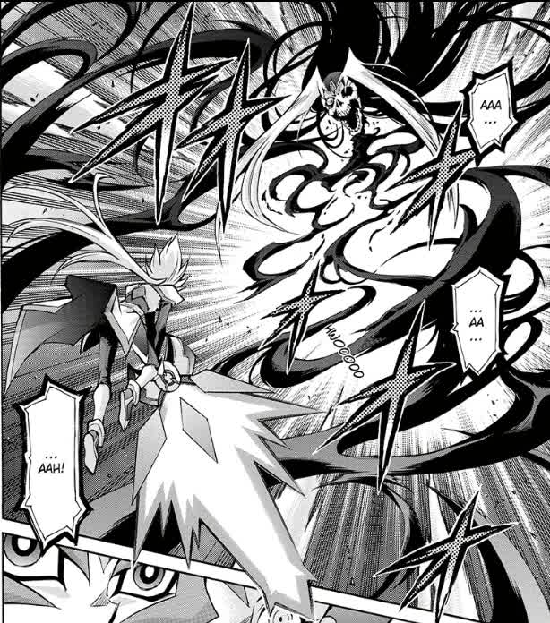

Manga:
Rango 51:
その名は･･･ゼアル！！(¡¡Su nombre es... Zexal!!)
Escritor:
Shin Yoshida.
Dibujante:
Naohito Miyoshi.
Supervisor(autor original de mangas previos de Yu-Gi-Oh!):
Kazuki Takahashi.
Resumen:
El manga abarca el final de la batalla entre Kaito Tenjo, Yuma Tsukumo/Astral y Ryoga Kamishiro (con ayuda de Kyoji Yagumo) vs E'Rah la cual llega a su final gracias a que Yuma Tsukumo y Astral se unen para poder usar el poder de Zexal y acabar con Anti-Hope, God of Despair y cerrar el duelo con la derrota de E'Rah.
